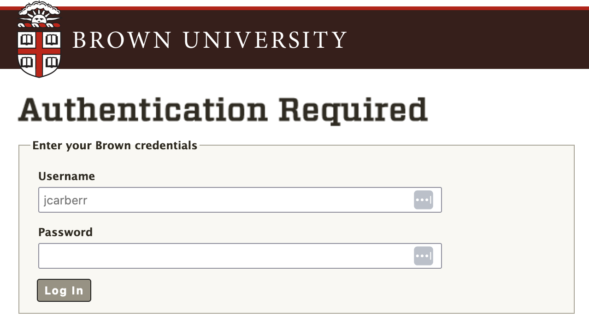
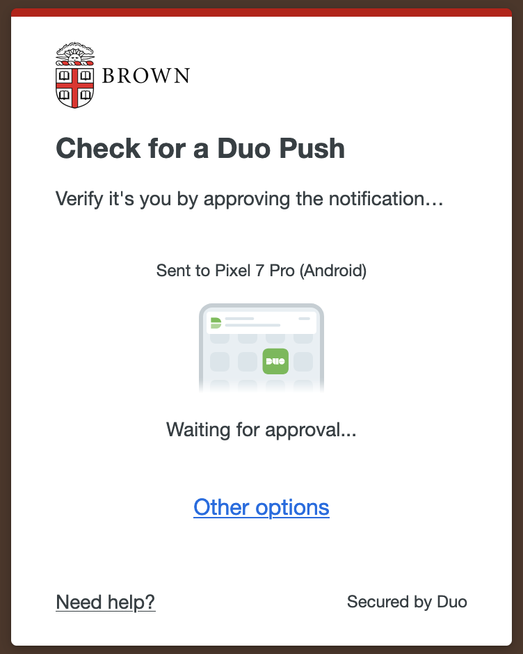
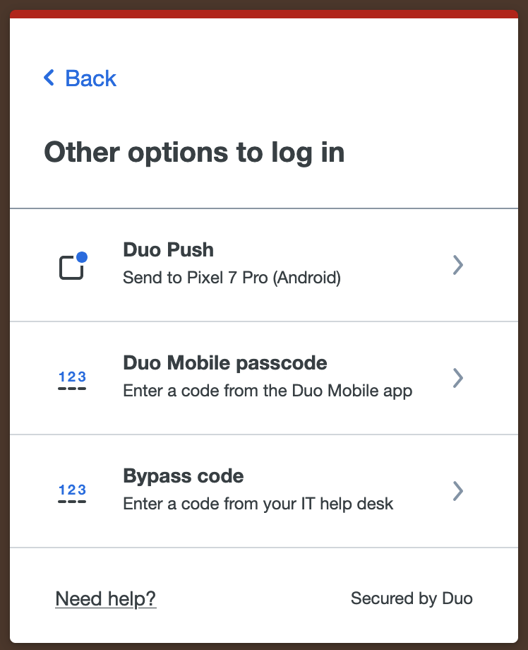

Workshop Instructions
Table of Contents
Please consider ‘signing in’ to the workshop by providing your institution/location, position, and field of study. This information is used in reporting on milestones for the grants that continue to fund our dissemination and development. We don’t ask for name or email, and the form should take no more than 30 seconds to complete.
Click here to navigate to our Virtual Sign-In Form.
Thanks for your support. 😁
To follow along with the workshop, you’ll need the hnn-data repository on your local machine / virtual environment.
You can download the file here or you can run the following command to clone the repository.
If you already cloned the hnn-data repository on your machine, be sure to update it to include the latest changes.
This installation method is the quickest way to get up and running with the HNN-Core GUI, though it does require a Google Account. If you do not have a Google account, you can either create one for free to run the notebook, or try one of the other installation methods listed below.
We have created a Google CoLab notebook that allows you to run the HNN-Core GUI out of your browser, with access to your local filesystem. Click here to open the notebook, which includes instructions on how to get set up.
Warning: You may experience considerable lag in navigating the virtual desktop environment if you do not have a strong WiFi connection. If you experience this issue, we encourage you to try one of the other installation methods here to get started.
Go to Oscar-on-Demand (OOD): ood.ccv.brown.edu/pun/sys/dashboard/batch_connect/sessions
Select a username from the following spreadsheet and add an “X” to the appropriate cell. The “X” is to indicate that the username you selected is “in use” so another participant doesn’t try to log in with the same username/bypass code
Enter your selected username into ‘Username’ field of the login page
Enter the password: HNNws2024*

From the DUO authentication screen, select “Other options” and then choose “Bypass code”
|  |  |
|---|
Enter the bypass code associated with the username you selected in Step 2
Choose the “Desktop (Advanced)” application. Note that this is different form the regular “Desktop” app.
You will see a form. Enter the following in the fields.
Click “Launch” . It may take a minute before the “Launch Desktop” button appears.
With the Oscar desktop instance open, launch a Terminal via the “Terminal Emulator” at the bottom of the Desktop or via the Applications drop-down at the top-left of the Desktop.
Type the following into the terminal to activate the environment.
module purge
module load python/3.11
module load hpcx-mpi/4.1.5rc2
source /oscar/data/ccv_workshop/hnn_env/bin/activateWithin the same terminal with the hnn_env activated, type the following to launch the GUI.
From the Oscar virtual desktop, open a new terminal and run the following commands.
module purge
module load python/3.11
module load hpcx-mpi/4.1.5rc2
source /oscar/data/ccv_workshop/hnn_env/bin/activate
git clone https://github.com/jasmainak/hnn-workshop-materials.git
cd hnn-workshop-materials/
jupyter lab # or `jupyter notebook` alternativelyYou can easily install HNN-Core GUI on your local machine with pip.
To do so, open a Terminal and and enter the following command:
For bash/Powershell
For zsh
Once installed, you can launch the GUI with the following command.
Note that you will not be able to utilize the MPI backend to run simulation in parallel without also installing MPI on your machine. We recommend using the Conda install method below if you would like to utilize MPI, as it significantly streamlines the MPI setup process.
For our workshops, we will be running simulations with only a few trials at most, and so MPI is not strictly necessary to keep up with the materials.
Note: We recommend using use Windows Subsystem for Linux (WSL) to run HNN on Windows machines. Installation instructions can be found here
Start by creating a new conda environment. We recommend creating an environment with the fewest number of dependencies to speed up the installation process.
conda create --name hnn_core_gui python=3.11 --no-default-packages
conda activate hnn_core_gui
pip install --pre hnn-core[gui]To run simulations in parallel across multiple cores, which dramatically speeds up siuations, you’ll need to set up the MPI backend.
conda activate hnn_core_gui # activate the environment if needed
conda install -y openmpi mpi4py
pip install psutilAdditionally, for MacOS, run the following command.
More detailedd instructions are available on our parallel backends page.
You can now launch the GUI from within your conda environemnt.